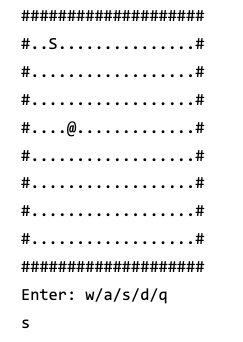

Hello, I’m Shazil Khan
University of Calgary Student
Welcome to my portfolio! I'm a dedicated student with concentrations in Computer Science and Math.
I have experience in software development, mechanical design, and problem-solving.
Explore my projects and feel free to reach out!
About Me
I am currently pursuing a Bachelor of Science in Natural Sciences (Computer Science & Math) at
the University of Calgary. Previously, I studied Engineering at
Dalhousie University, where I honed my skills in mechanical design and prototyping.
My passion lies in bridging hardware and software to create innovative solutions.
Skills
- Analytical: Skilled at optimizing designs and developing prototypes
- Problem Solving: Proficient in Java, Python, and computational algorithms
- Collaboration: Effective communicator in cross-functional teams
- Technical: Familiar with OpenCV, mechanical design fundamentals, rapid prototyping
Projects

Drone Pursuit Tracking Project (SkyPro)
Developed a camera vision system using AI in Python to detect and track targets in real-time.
Leveraged OpenCV libraries and simulated Lidar data to enhance tracking accuracy and responsiveness.

Pac-Man Game - Group 16
Collaborated with a team to develop a Java-based implementation of the classic Pac-Man arcade game.
Integrated JavaFX for the GUI, implemented game mechanics, and developed features like leaderboards
and dynamic difficulty levels.

Snake Game
A classic Snake game implemented in Java. Control the snake to eat food, grow longer, and
avoid collisions.
Crane Design Report
A comprehensive final design report for a miniature crane model, detailing the design,
constraints, and evaluation. Explores the mechanical engineering approach behind wind
turbine rotor assembly.
Let’s Connect!
I’m always looking for challenging opportunities that combine software, artificial intelligence, and mechanical design.
If you’d like to collaborate or discuss any projects, feel free to get in touch!

{kind=link}
{kind=link}